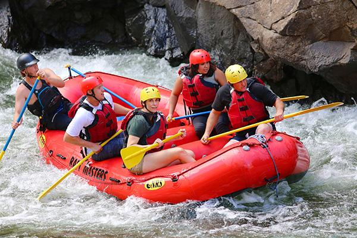
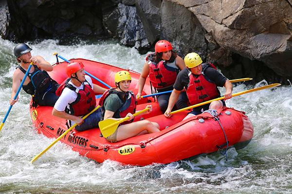

At Credd Rafting, we're committed to:
- Providing unforgettable white water rafting experiences that inspire a sense of adventure and connection with nature
- Maintaining the highest standards of safety, professionalism, and environmental responsibility
- Building a supportive community of rafting enthusiasts and promoting the sport's growth and development

 
